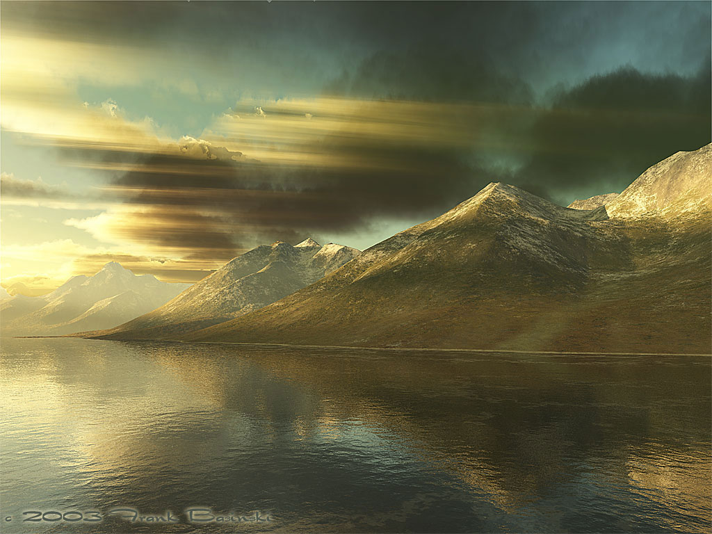
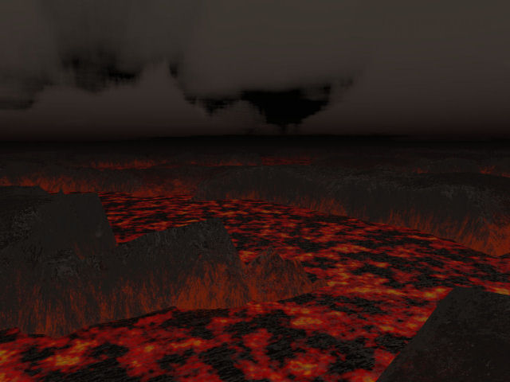

Terragen
[Terragen] is a free program that can make earthly or alien landscape images (and in the newer versions, even "animated" flybys!). You set up the sky color, cloud cover, sun position, terrain and optionally water, and tell the program to render the scene. It comes with many presets and has extensive plugin support: there are many plugins on the [Terragen] website. Several are available for free download.
Although, as the program's name seems to imply, Terragen can be used for making terrain heightmaps, it is much better suited to making textures for SkyBoxes.
The Future
[Terragen 2], the next enhanced version of Terragen has long been in development, and is currently at a public 'Technology Preview' stage. Terragen 2 adds much graphical improvement, and a multitude of new features, such as the ability to render entire planets.
Example Renders: Terragen
The following images briefly demonstrate Terragen's capabilities.
![[toofar]](images/toofar.jpeg) Beautiful cliffs by Frank Bosinski 
Another by The same guy |
Noob Landscapes
Of course, the above images were created by experienced Terragen users. What you will get, even after some experience, is something more like these:
![[IceWorldRender_02640x480]](images/iceworldrender-02640x480.jpeg) This is even after alot of practice and careful planning 
|
I used the WaterWorks plugin to create the lava effect. Rendering it took about 5 1/2 hours. (I think because of the lava) The most difficult parts of it were making the atmosphere block out most of the sunlight, while still making the land visible. The sky is still pretty screwy... I wanted more of a roiling cloud effect, but I think that not enough light penetrated to make the roiling clouds visible. Also, it's a little to grey/brown... Unfortunatly, there was no way to make the lava give off light. That would have been really cool. I think it's the greatest fault of this environment, and really makes it look unrealistic. Heat waves would have been cool, too. (overdoing it?  thought so...). The other hard part was creating the "glowing" red rock close to the where the rock begins to melt into the lava. I had trouble getting the color right, and positioning the suface layer max. height so that the red color didn't go too high on the rock. Additionally, it was hard to create the "rivers of lava effect" when making the heightmap and positioning the height of the lava. I went through generating maybe five different heightmaps before I got it to how it looks in the picture.
thought so...). The other hard part was creating the "glowing" red rock close to the where the rock begins to melt into the lava. I had trouble getting the color right, and positioning the suface layer max. height so that the red color didn't go too high on the rock. Additionally, it was hard to create the "rivers of lava effect" when making the heightmap and positioning the height of the lava. I went through generating maybe five different heightmaps before I got it to how it looks in the picture.
Example Renders: Terragen 2
- [Official Terragen 2 Gallery], hosted by planetside.co.uk
- [Melting Ice Terragen 2 Gallery], hosted by meltingice.net
Making Skybox Textures with Terragen
Once your environment is setup, you have to take snapshots of 5 views (top and 4 sides). You can use [TerraSky] to automate this process or perform it manually.
Terragen 2 Users: Note that a different method of creating skyboxes is used in the forthcoming [TerraGen 2], and there is no automated script or plugin for Terragen 2 as of yet. An external tutorial is included within the links at the bottom of this page.
Manually Rendering the Views
- The camera zoom level must be set to 1. If you choose a different zoom level, you will get texture alignment problems.
- Set the camera orientation head to 0. Set the pitch at 0. Hit the render image button and save as sky0.bmp.
- Set the camera orientation head to 90 (looking right); Hit the render image button and save as sky90.bmp.
- Get it? now do the same with 180 and 270 degrees.
- Then set the head to 0 and pitch to 90 (looking up) and save.
- If want a floor set the pitch to -90.
- Convert the .bmp to .pcx in photoshop? or some other program, then import them to Unrealed.
- The maximum size for the uregistered version of Terragen is 960x960. Resize in PS to 512x512 or 1024x1024.
- Remember to give a nod to Terragen in you map's .txt file.
Tips
- The skybox brush size should be a multiple of your texture size. (i.e., tex. size 512x512 make you brush 1024x1024x1024) This makes it very easy to line up your textures.
- If you encounter lines in your skybox, make the skybox brush 1~2 units less than your texture size (i.e., 1022x1022)
- U mapping flips the textures on import and placement.
- Due to the way Terragen renders and the parallax effect of the skybox only a simple cube is needed for the skybox brush. Spheres and cylinders are not necessary.
Terragen and UED3
The following information will help you render a set of skybox textures in Terragen and set them up in UED3 w/o having those nasty white lines.
- Go to camera settings → Zoom/Magnification set that to "1"
- Set your image size to something square
- Uncheck fixed hieght above surface for target position
- There are three fields for camera orientation
- Set the first one, "head" to "270" or "-90"
- Set the middle one, "pitch" to "0"
- Set the right one, "bank" to "0"
- Render your image
- Save as "West"
- For the next image simply change the "head" to "0"
- Make sure pitch and bank are still at "0"
- Render, save as "North"
- Change the head to "90"
- Make sure pitch and bank are still at "0"
- Render, save as "East"
- Change head to "180"
- Make sure pitch and bank are still at "0"
- Render, save as "South"
- Now, leave the head at "180" and for pitch enter "90"
- Make sure bank is still at "0"
(doing it this way for the top and bottom sets the render up so it imports at the right rotation to UED) - Render, save as "Up"
- Set the pitch to "-90"
- Make sure head is still at "180" and bank at "0"
- Render, save as "Down"
- Do whatever post processing you need to make them importable. You will preferably size them to 1024x1024 to conform with this tutorial.
- Once you get them into MyLevel you will want to open the properties of each tex and change → Texture →UClampMode and VClampMode to TC_Clamp. This stretches the border pixels of an image and will remvoe the white seams.
- Set the grid to 4096
- Make a cube 1024 all three dimensions
- Right click it, Reset → All
- Now slide it somewhere to the left out of the way
- Subtract, select all faces align →to face, then pan ONE unit U and ONE unit V
- Flag unlit
- Apply the textures using the top down view as the orientation would be if it was a map. Left=West, Right=East
etc... voila!
Related Topics
- Building A SkyBox – A tutorial on building SkyBoxes on witch to put your Terragen rendered textures
- MyLevel – Information on embedding your SkyBox textures into your map file via this virutal package
- Texture
- Creating Textures – General info on creating custom textures
- File Format
- Creating A Terrain
External Links
Documentation & Tutorials
- [Terragen 2 Documentation & Tutorials], hosted by planetside.co.uk
- [Terragen 2 Skybox Tutorial], hosted by outpt.co.uk
Discussion
Bob_The_Beheader: Terragen is a great piece of software, but you have to be careful when working with it, as the temptation exists to "overdo it," and create very complicated environments that, in the end, don't look very good... I'm very glad that Terragen now incorporates realtime preview rendering, because it was a pain in the ass to have to do a rendering preview every time you wanted to see what would show up on the output images. Umm...question: does anyone know of a way to take the surface maps and put them on the terrain in UEd? I hope I'm making sense...
Bob_The_Beheader: Some renders of Terragen environments, especially when using 3rd party plugins and when rendering at high detail settings and high resoulutions, have taken upwards of 6 hours to complete. This is on my 3.2ghz computer... 
King Mango I'm not sure we need the pictures on this page. Terragen is capable of much more than that and I think it's better to link to off site galleries like Luc Bianco, Oshyan, and a dozen more real masters of the program.\
FreshMeat we need instructions on how to make a heightmap with teragen.
Outpt Updated the page with Terragen 2 information. Minor corrections. I think the images need to be cut down a little, such as the lava example, anyone agree?
Bob_The_Beheader FreshMeat: Terragen certainly isn't the best software out there for heightmap creation. [WorldMachine] is a great piece of software for very realistic heightmaps that don't look like they've been randomly generated and then raised and lowered by hand.